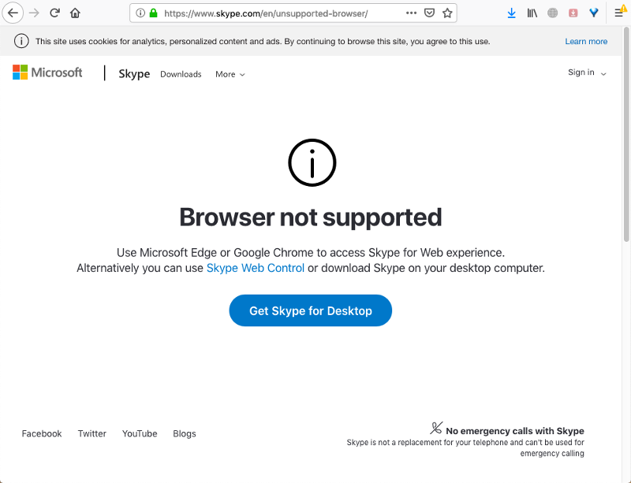
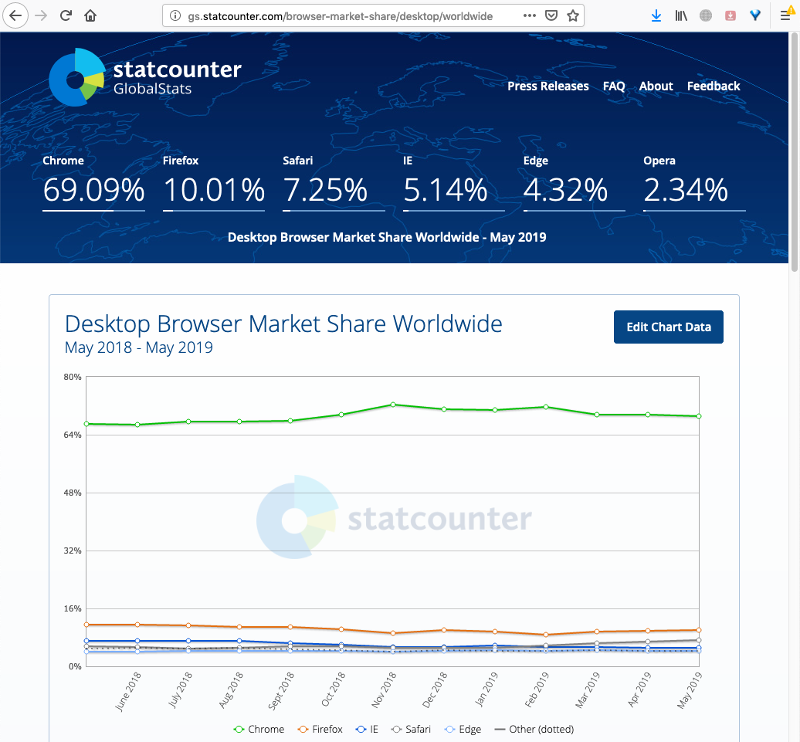

2019-06-04 11:40
I used to have Skype in my web browser for some time. However, that time is now over:

Apparently, it's too difficult for Skype team to support the second most popular desktop browser:

Edge is number 5 in popularity, however, it's number one in the list of "recommended" browsers to run Skype. Clearly, Microsoft isn't worrying about people.